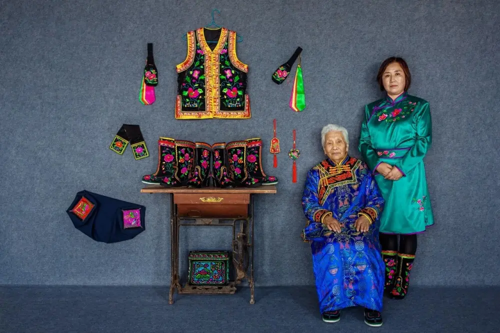
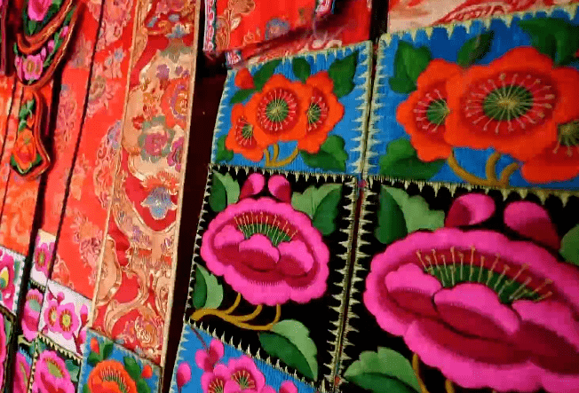
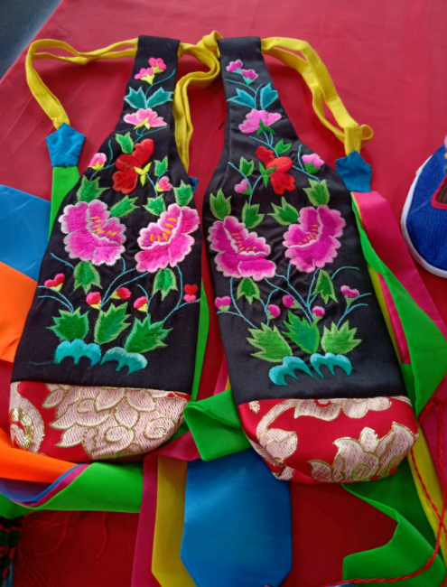

蒙古族刺绣
蒙古族是个善于装饰生活的民族。刺绣作为民族服饰的主体工艺，应用蒙古族刺绣范围很广，几乎涉及了服饰、佩饰、生活用具等各个方面，是蒙古族一直沿用的生活习俗，具有鲜明的民族特色和生活情趣。
草原刺绣使用彩色丝线、棉线、驼丝线、牛筋等不同材质的绒线，在棉布、丝绸或者毡毯、皮制品上进行刺绣。刺绣工艺又有传统手工刺绣、贴花、堆绣等类别之分。

蒙古族刺绣传承者梁银小和她的儿媳春英

蒙古刺绣
刺绣工艺又有传统手工刺绣、贴花、堆绣等类别之分。刺绣针法有平绣、结绣补绣、锁绣、盘金绣、打子绣、拼花等20多种。蒙古族服饰、佩饰，都有精美的刺绣图案装饰。。
特别是一些特殊部位的装饰物,如袍领、袍襟、袍边，蒙古靴、荷包、碗袋、裕链、烟荷包、发套、摔跤服、毡袜腰边、蒙古包等，在毡子和皮子上所做的贴绣如门帘垫子、绣花毡、驼鞍、马鞍垫等都是用精美的丝线刺绣出来的.。
